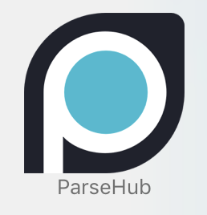

come fall 2020, i had begun a course on information design.
like the courses before it, this one came with a term-long project. this one was all about data organization.
i had recently moved back to Chicagoland, and was curious about rental listings in the city. what were their prices? where could i afford to live? what could i expect for my money?
Parsehub could help me scrape sites and find the answers.
Zillow was built with anti-scraper rules, so I scraped Rent.com instead.
thanks to their listings, i was able to scrape the addresses, monthly prices, and relative sizes of 180 listings in Chicago:
after collection, i went over to codepen.io to make a simple website, built just to visualize the data hierarchy. my layout was simplistic at first, but it helped me figure out the way i wanted to put everything together.
I didn't end up saving this crude website, which is why only images of it now exist.
once we reached the end of the quarter, it was time to put everything together.
desiring a more layered approach to my data's presentation, i designed a simple wireframe in Figma.
you can play around with the wireframe prototype in the window below. we weren't required to put any of our actual data in these final outputs – only illustrate what we hoped to accomplish with our new data set.